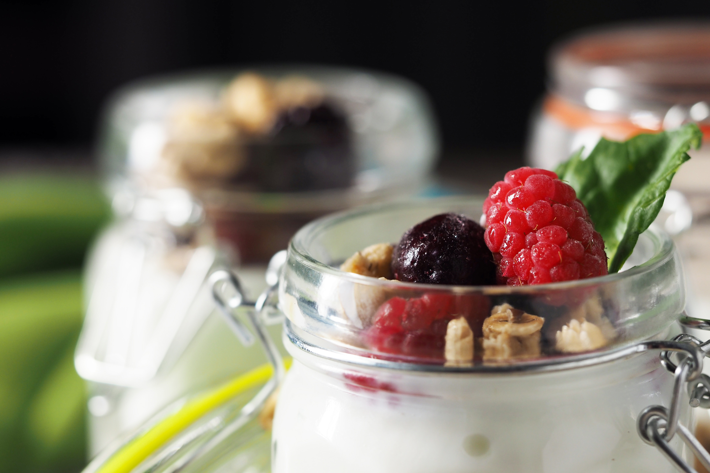

This recipe is adapted from "Revolution Fermentation", author unknown,
and found on https://revolutionfermentation.com/en/blogs/yogurt/l-reuteri-yogurt-recipe/
Recipe 1
Recipe 2
Recipe 3
Recipe 4

Photo by: Rawpixel, https://www.rawpixel.com/image/5970746/yogurt-parfait, via Rawpixel
Rate this Recipe
Conversion
Ingredients List
1 sachet LR Superfood Starter Culture
2 tablespoons prebiotic fibre
4 tasses whole cow's milk (use dairy products without additives)
Equipment List
1 appliance capable of maintaining a constant temperature of 37°C (100°F)
1 glass jar with lid, minimum 1 litre capacity
Directions
In the glass jar, mix the prebiotic fibres with the contents of one sachet of LR Superfood Starter.
Add 250 ml (1 cup) of milk (cold or at room temperature).
Whisk to remove lumps and ensure even distribution. Do not use a blender.
Stir in the rest of the milk, leaving a few centimetres of space at the top of the jar. Mix or whisk to ensure even distribution.
Do not mix in a blender.
Put a lid on, leaving it slightly ajar, or use plastic wrap.
Place the jar in the incubator and ferment at 37°C (100°F) for 36 hours, away from drafts.
Do not open the incubator or stir the jar during fermentation.
After 36 hours, remove the jar from the incubator.
Allow to cool to room temperature, then seal tightly and refrigerate.
You can eat the yogurt after it has been refrigerated for a few hours.
Repeat these instructions but use 2 tablespoons of your prepared yogurt as a starter ferment.
Don't forget the prebiotic fibre!
If the previous yogurt has separated, use 1 tablespoon of the solid part
and 1 tablespoon of the whey (or 2 tablespoons of whey if the solid part is too firm) as a starter ferment.